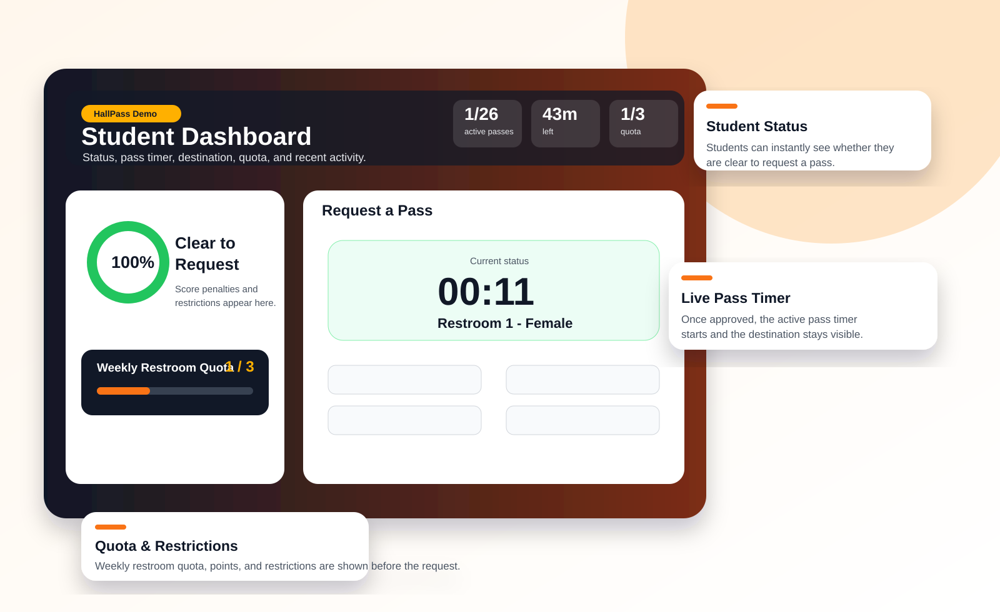
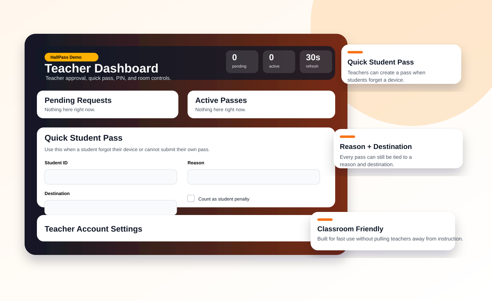
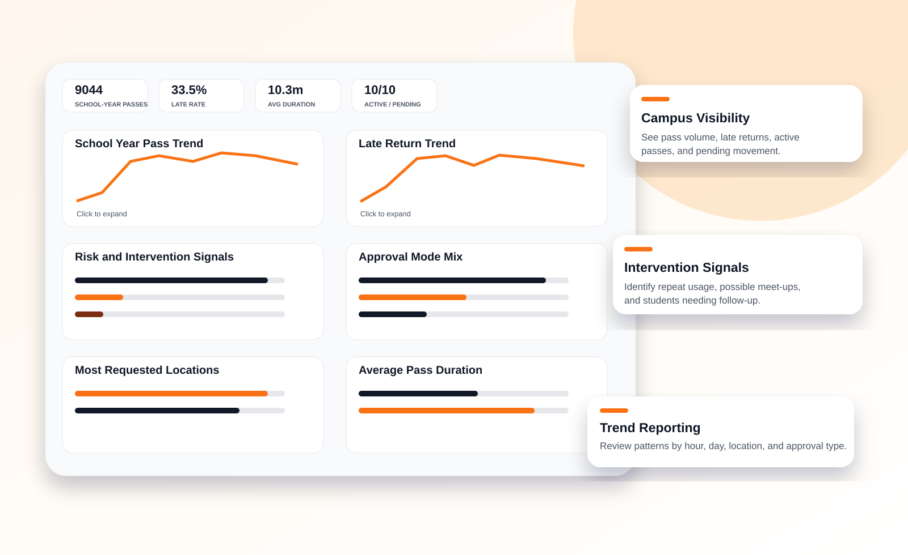
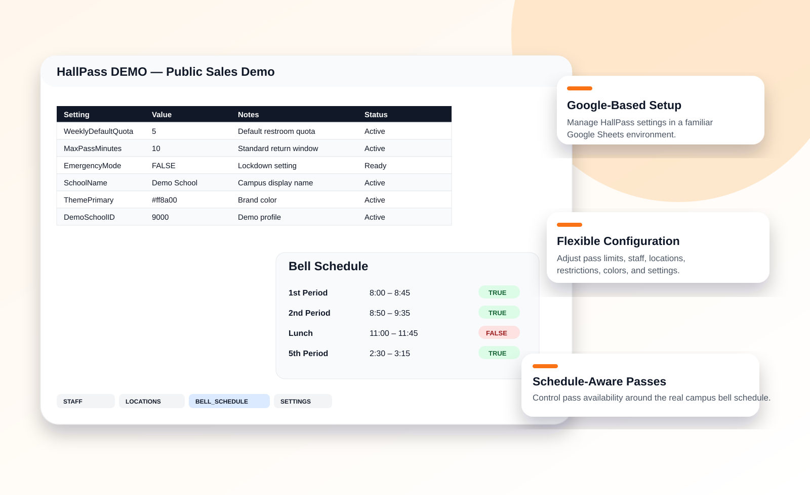
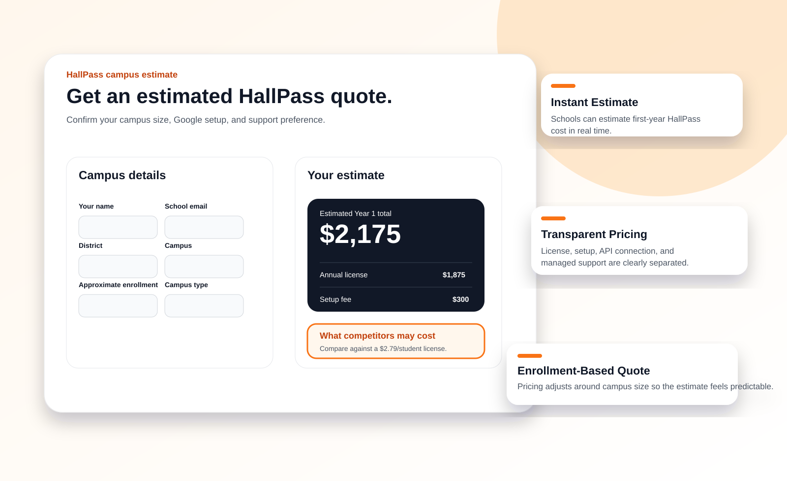

Digital hall passes without the enterprise headache.
HallPass gives campuses a practical way to approve passes, monitor active student movement, review patterns, and protect instructional time using a Google-based setup that schools can actually manage.

The hallway problem is simple. The old tools are not enough.
Paper passes do not show who is out, how long they have been gone, where patterns are forming, or which students need follow-up.
Who is out?
See active passes instead of relying on memory, paper, or hallway guesswork.
How long?
Track expected return times and late-return patterns before they become bigger issues.
What pattern?
Review pass history, repeated use, quota issues, and campus trends.
Built around the real school-day workflow.
HallPass focuses on the core system a campus needs first: student request, teacher approval, active pass visibility, settings, and reporting.
Student requests
Student chooses reason, teacher, destination, and expected return.
Teacher approves
Teacher can approve, use PIN control, or create a quick pass.
Admin monitors
Campus leaders see active passes and review pass behavior.
Campus adjusts
Settings, locations, restrictions, and quotas can be tuned over time.
Built for classroom speed.
Teachers need something practical during instruction, not another complicated dashboard. The teacher workflow supports quick passes, approval decisions, and room-level expectations.


Turn hallway activity into usable campus insight.
Administrators can review pass trends, late returns, peak usage, approval modes, and high-use patterns. The goal is better visibility.
Google-based configuration schools can actually manage.
HallPass is built around Google Apps Script and Google Sheets, making it easier for many schools to test, configure, and manage without standing up a separate enterprise system.

Simple pricing without the mystery.
HallPass is priced to make a campus pilot easier to approve. Start with the core license, then add only the setup options you need.
per student / year

Try the live demo.
Open the student, teacher, or administrator view to see the current workflow and decide whether it fits your campus needs.
Student Demo
Student request experience, status, quota, pass timer, and recent activity.
Open Student DemoTeacher Demo
Teacher approval, quick pass, PIN approval, and pass monitoring workflow.
Open Teacher DemoBuilt by Dr. Adam Bell
Dr. Adam Bell is a Texas educator and school administrator who understands the daily pressure of campus operations: hallway accountability, student movement, teacher workflow, school safety, and protecting instructional time.
Focused alternative
HallPass gives schools a lower-cost way to manage student movement without adding another complicated platform to the school day.
Ready to see if HallPass fits your campus?
Start with the demo, request an estimated campus quote, or book a short walkthrough.